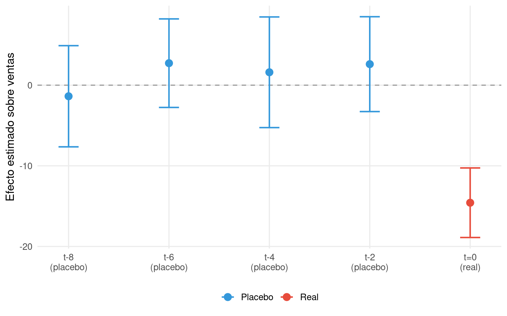
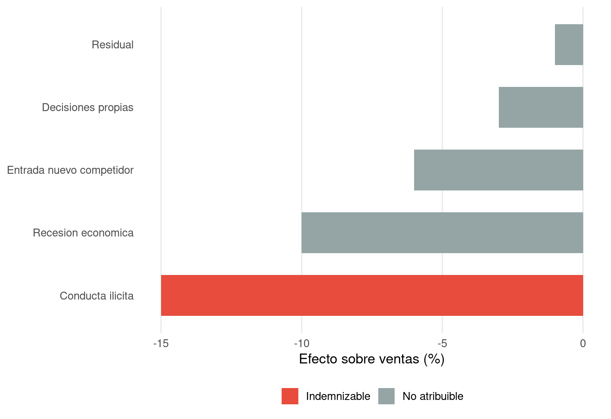

Cuantificar un daño sin demostrar que la conducta ilícita lo causó es un ejercicio inútil desde el punto de vista procesal. Por muy sofisticado que sea el modelo econométrico, por muy precisa que resulte la estimación del perjuicio, si el perito no logra establecer un nexo causal convincente entre la infracción y el daño reclamado, la cuantificación carece de fundamento. El tribunal desestimará la reclamación o, en el mejor de los casos, otorgará una indemnización simbólica que no guarda relación con el daño real.
Esta exigencia, que en el plano jurídico se traduce en la necesidad de acreditar el nexo de causalidad, tiene un correlato técnico que el perito debe abordar con el mismo rigor con el que formula sus modelos: la demostración empírica de que la variación observada en la variable de resultado —precios, ventas, beneficios, cuotas de mercado— es atribuible a la conducta ilícita y no a otros factores que podrían haber producido el mismo efecto.
A lo largo de mi carrera profesional, he constatado que la causalidad es, con diferencia, el campo de batalla donde se ganan y se pierden más procedimientos de daños. He visto casos en los que una estimación de sobreprecio técnicamente impecable fue descartada porque la contraparte demostró que la subida de precios obedecía a un incremento de costes de materias primas, no al cártel. He visto otros en los que una caída de ventas atribuida a la denigración de un competidor resultó ser, en realidad, consecuencia de la entrada de un nuevo operador en el mercado. La causalidad no es un trámite formal: es la columna vertebral del informe pericial.
3.2 Correlación y causalidad: una distinción que salva informes
Toda la econometría aplicada a la cuantificación de daños descansa sobre una distinción elemental pero frecuentemente ignorada: la diferencia entre correlación y causalidad. Que dos variables se muevan juntas no implica que una cause a la otra. Que las ventas de una empresa cayeran durante el período de la conducta ilícita no demuestra, por sí solo, que la conducta causó la caída: pueden existir decenas de factores alternativos que expliquen la misma evolución.
El riesgo de confundir correlación con causalidad es especialmente agudo cuando el perito trabaja con datos observacionales —que es la situación habitual en los procedimientos de daños, donde no es posible realizar experimentos controlados. En un ensayo clínico, el investigador puede asignar aleatoriamente a los sujetos a un grupo de tratamiento y a un grupo de control, de modo que cualquier diferencia entre ambos grupos sea atribuible al tratamiento. En un procedimiento de daños, esa aleatorización no existe: la conducta ilícita afectó a determinadas empresas, mercados o períodos, y no a otros, por razones que no son aleatorias sino que obedecen a la lógica económica de la infracción.
La tarea del perito consiste, entonces, en construir un diseño empírico que se aproxime, en la mayor medida posible, a la lógica de un experimento controlado. Los métodos econométricos que se desarrollan en la Parte II de este manual —antes-y-después, comparables, diferencias en diferencias, control sintético— son, en esencia, estrategias de identificación causal: formas de aislar el efecto de la conducta ilícita de los demás factores que podrían explicar la variación observada.
Figure 3.1: Ejemplo de correlación espuria: las ventas caen al mismo tiempo que la conducta ilícita, pero también coincide con una recesión económica. Sin un análisis causal riguroso, el perito podría atribuir erróneamente toda la caída a la infracción.
La Figure 3.1 ilustra un escenario que he encontrado repetidamente en la práctica. Las ventas de la empresa afectada caen a partir del mes 20, que coincide con el inicio de la conducta ilícita. Sin embargo, una recesión económica había comenzado dos meses antes, en el mes 18, y ya estaba provocando una reducción de ventas por sí sola. La línea azul muestra la evolución que habrían tenido las ventas con la recesión pero sin la conducta ilícita. El daño realmente atribuible a la infracción no es la brecha total entre lo observado y el contrafactual sin ningún factor adverso (línea discontinua), sino únicamente la diferencia entre lo observado y lo que habría ocurrido considerando la recesión pero no la conducta.
Un perito que atribuyera toda la caída de ventas a la conducta ilícita estaría sobreestimando el daño de forma sustancial. La contraparte, en su informe, señalaría —con razón— que parte de la caída obedece a la recesión, y el tribunal se encontraría ante dos cuantificaciones radicalmente distintas sin herramientas para discernir cuál es correcta. Este problema de atribución es, precisamente, lo que los métodos econométricos de identificación causal están diseñados para resolver.
3.3 Estrategias de identificación causal
La econometría moderna ofrece un repertorio de estrategias para abordar el problema de la causalidad en contextos observacionales. Cada una de ellas impone supuestos diferentes y resulta apropiada para circunstancias distintas. El perito debe seleccionar la estrategia que mejor se adapte a los datos disponibles y a las características del caso, siendo transparente respecto a los supuestos que asume y a las limitaciones que implican.
3.3.1 El enfoque antes-y-después
La estrategia más intuitiva consiste en comparar la variable de interés antes y después de la conducta ilícita. Si las ventas eran estables antes de la infracción y cayeron bruscamente tras su inicio, es razonable atribuir la caída a la conducta. El supuesto causal implícito es que, en ausencia de la infracción, la variable habría continuado su trayectoria previa.
Este supuesto es plausible cuando no existen otros factores que hayan cambiado simultáneamente. Pero cuando, como en el ejemplo anterior, coinciden en el tiempo la conducta ilícita y otros shocks —una recesión, un cambio regulatorio, la entrada de un nuevo competidor—, el enfoque antes-y-después puro resulta insuficiente. El perito debe entonces incorporar variables de control que capturen el efecto de esos factores concurrentes, o recurrir a estrategias de identificación más sofisticadas.
3.3.2 El enfoque de comparables
Una alternativa consiste en comparar a la víctima con entidades similares que no fueron afectadas por la conducta. Si la empresa dañada perdió un 15% de sus ventas durante el período infractor, pero empresas comparables en mercados no afectados también perdieron un 8% (debido, por ejemplo, a la recesión), el daño atribuible a la conducta se estima en un 7%. El supuesto causal es que la evolución del grupo de comparación representa lo que le habría ocurrido a la víctima en ausencia de la infracción.
La credibilidad de este enfoque depende críticamente de la calidad de los comparables. Una empresa que opera en un mercado geográficamente distinto, con una estructura de costes diferente y una base de clientes heterogénea, puede no constituir un buen contrafactual para la víctima. La selección de comparables es, en sí misma, una decisión metodológica que debe estar fundamentada y que será objeto de escrutinio por la contraparte.
3.3.3 Diferencias en diferencias
La combinación de ambos enfoques —temporal y de comparables— da lugar a la estrategia de diferencias en diferencias (DID), que compara la evolución de la víctima antes y después de la conducta con la evolución de un grupo de control no afectado durante el mismo período. El supuesto clave es que, en ausencia de la infracción, la víctima habría evolucionado de forma paralela al grupo de control: el supuesto de tendencias paralelas.
Cuando este supuesto se sostiene —y existen tests empíricos para verificarlo, como se detalla en el Capítulo 7—, el estimador DID proporciona una estimación causal del efecto de la conducta que es robusta a la presencia de factores comunes que afecten por igual a ambos grupos (como una recesión general o un cambio regulatorio sectorial).
3.3.4 Tests de falsificación y placebos
Un instrumento poderoso para reforzar la credibilidad de la estimación causal son los tests de falsificación o placebos. La lógica es sencilla: si el modelo identifica correctamente el efecto de la conducta, no debería encontrar ningún efecto cuando se aplica a períodos o grupos donde la conducta no existió. Si el perito estima un «efecto» significativo de la conducta en un período anterior a su inicio, o en un mercado donde la infracción no tuvo lugar, algo está mal en la identificación causal.
Code
set.seed(77)# Simulamos un efecto real en t=0 y placebos en t=-8,-6,-4,-2placebo_t <-c(-8, -6, -4, -2, 0)efecto_real <-c(0, 0, 0, 0, -15)efecto_estimado <- efecto_real +rnorm(5, 0, 2.5)se <-c(3.2, 2.8, 3.5, 3.0, 2.2)df_placebo <-tibble(periodo = placebo_t,efecto = efecto_estimado,ci_low = efecto_estimado -1.96* se,ci_high = efecto_estimado +1.96* se,tipo =c(rep("Placebo", 4), "Real"))ggplot(df_placebo, aes(x = periodo, y = efecto, color = tipo)) +geom_hline(yintercept =0, linetype ="dashed", color ="grey60") +geom_errorbar(aes(ymin = ci_low, ymax = ci_high), width =0.4, linewidth =0.8) +geom_point(size =3.5) +scale_color_manual(values =c("Placebo"="#3498db", "Real"="#e74c3c")) +scale_x_continuous(breaks = placebo_t,labels =c("t-8\n(placebo)", "t-6\n(placebo)", "t-4\n(placebo)", "t-2\n(placebo)", "t=0\n(real)")) +labs(x =NULL, y ="Efecto estimado sobre ventas", color =NULL) +theme_minimal(base_size =13) +theme(legend.position ="bottom", panel.grid.minor =element_blank())

Figure 3.2: Test de placebo temporal: se estima el efecto de la conducta en períodos ficticios anteriores a la infracción real. Si la identificación causal es correcta, no deberían aparecer efectos significativos en las fechas placebo.
La Figure 3.2 muestra el resultado típico de un test de placebo temporal bien ejecutado. En los períodos anteriores a la infracción (marcados como placebo), el efecto estimado no es significativamente distinto de cero: los intervalos de confianza cruzan la línea horizontal. En el período real de la conducta (t=0), el efecto es negativo y estadísticamente significativo. Este patrón refuerza la credibilidad de la estimación causal: si el modelo detectara efectos espurios en los períodos placebo, habría razones fundadas para dudar de que el efecto estimado en el período real sea genuinamente atribuible a la conducta.
3.4 La atribución del daño: aislar el efecto de la infracción
Aun cuando se haya establecido que la conducta ilícita causó un daño, queda por resolver una cuestión igualmente importante: qué proporción del daño observado es atribuible a la infracción y qué proporción obedece a otros factores concurrentes. Este problema de atribución es, en la práctica, uno de los más controvertidos y el que genera mayor divergencia entre los informes periciales de las partes.
Los factores que pueden concurrir con la conducta ilícita son múltiples y variados. El ciclo económico puede estar deprimiendo la demanda con independencia de la infracción. Un cambio regulatorio puede haber alterado las condiciones del mercado. La víctima puede haber tomado decisiones empresariales erróneas que habrían reducido sus beneficios incluso en ausencia de la conducta. Un nuevo competidor puede haber entrado en el mercado, erosionando las cuotas de todos los incumbentes. Un avance tecnológico puede haber dejado obsoleto el producto de la víctima.
El perito debe identificar estos factores, evaluar su relevancia y, en la medida de lo posible, cuantificar su contribución a la variación observada. La econometría ofrece herramientas para esta tarea de descomposición: la inclusión de variables de control en los modelos de regresión, los modelos de series temporales con múltiples componentes, los tests de cambio estructural que permiten datar con precisión el momento en que se produjo cada ruptura, y los análisis de sensibilidad que evalúan cómo cambia la estimación del daño cuando se incluyen o excluyen determinados factores.
Code
componentes <-tibble(factor =c("Conducta ilicita", "Recesion economica", "Entrada nuevo competidor", "Decisiones propias", "Residual"),efecto =c(-15, -10, -6, -3, -1),tipo =c("Indemnizable", "No atribuible", "No atribuible", "No atribuible", "No atribuible"))componentes$factor <-fct_reorder(componentes$factor, componentes$efecto)ggplot(componentes, aes(x = factor, y = efecto, fill = tipo)) +geom_col(width =0.65) +geom_text(aes(label =paste0(efecto, "%")), hjust =1.2, color ="white", fontface ="bold", size =4) +coord_flip() +scale_fill_manual(values =c("Indemnizable"="#e74c3c", "No atribuible"="#95a5a6")) +labs(x =NULL, y ="Efecto sobre ventas (%)", fill =NULL) +theme_minimal(base_size =13) +theme(legend.position ="bottom", panel.grid.minor =element_blank(),panel.grid.major.y =element_blank())

Figure 3.3: Descomposición de la caída total de ventas en sus componentes causales. Solo la fracción atribuible a la conducta ilícita constituye el daño indemnizable.
La Figure 3.3 presenta un ejemplo estilizado pero representativo de lo que el perito debe hacer en cada caso. Las ventas de la víctima cayeron un 35% durante el período analizado. De esa caída total, un 15% es atribuible a la conducta ilícita, un 10% a la recesión económica, un 6% a la entrada de un nuevo competidor, un 3% a decisiones propias de la víctima y un 1% queda como residuo no explicado. Solo el 15% atribuible a la conducta constituye el daño indemnizable. Un perito que reclamara el 35% estaría inflando la cuantificación; un perito que no descompusiera los factores estaría exponiendo su informe a una impugnación fácil por la contraparte.
3.5 Concurrencia de causas y responsabilidad
La concurrencia de causas plantea cuestiones que trascienden lo puramente econométrico y entran en el terreno jurídico. Cuando múltiples factores contribuyen al daño, ¿quién responde de qué parte? ¿Puede la víctima reclamar al infractor la totalidad del daño observado y dejar que sea él quien demuestre qué parte obedece a causas ajenas? ¿O debe la víctima aislar, desde el principio, la fracción del daño atribuible a la infracción?
La Directiva 2014/104/UE no resuelve explícitamente esta cuestión, pero el principio de restitución íntegra, combinado con la prohibición de enriquecimiento injusto, impone un marco claro: la víctima tiene derecho a ser compensada por el daño causado por la infracción, ni más ni menos. Corresponde al perito cuantificar ese daño con la mayor precisión posible, aislando el efecto de la conducta de los demás factores concurrentes.
En la práctica procesal, la carga de la prueba sobre la atribución varía según la jurisdicción y las circunstancias del caso. En algunos procedimientos, el tribunal acepta una estimación del daño total y aplica un descuento por factores concurrentes. En otros, exige que el perito demuestre la contribución causal de la infracción de forma separada. En cualquier caso, el perito que presenta una descomposición rigurosa de los factores que han contribuido al daño se encuentra en una posición mucho más sólida que el que se limita a estimar un efecto total sin distinguir sus componentes.
3.6 El deber de mitigación y sus implicaciones
Un aspecto de la causalidad que merece atención específica es el deber de mitigación del daño. El principio general, reconocido en la mayoría de ordenamientos jurídicos, establece que la víctima tiene la obligación de adoptar medidas razonables para limitar el perjuicio sufrido. Si la víctima no mitiga el daño pudiendo hacerlo, la parte del perjuicio que habría podido evitarse no es indemnizable.
Para el perito, el deber de mitigación tiene una implicación directa en la construcción del escenario contrafactual. El contrafactual no es simplemente «lo que habría ocurrido sin la infracción», sino «lo que habría ocurrido si la víctima hubiera actuado razonablemente para mitigar el daño, una vez conocida la infracción». Si la empresa afectada por un cártel podía haberse abastecido de proveedores alternativos a precios competitivos y no lo hizo, el sobreprecio que pagó por no cambiar de proveedor puede no ser enteramente indemnizable.
La valoración de lo que constituye una mitigación «razonable» es, inevitablemente, una cuestión de juicio que combina elementos económicos y jurídicos. El perito puede contribuir evaluando si las alternativas de mitigación eran económicamente viables y en qué medida habrían reducido el daño. Pero la decisión final sobre qué grado de mitigación era exigible corresponde al tribunal.
3.7 Herramientas econométricas para la inferencia causal
Sin pretender desarrollar aquí la formulación técnica completa —que corresponde a los capítulos de métodos—, conviene enumerar las principales herramientas que la econometría pone a disposición del perito para abordar los problemas de causalidad y atribución descritos en este capítulo.
Los modelos de regresión con variables de control permiten aislar el efecto de la conducta incluyendo en el modelo los factores concurrentes como regresores adicionales. El coeficiente asociado a la variable indicadora de la infracción captura el efecto neto de la conducta, descontados los demás factores. La calidad de esta estimación depende críticamente de que se incluyan las variables de control relevantes y de que no existan factores omitidos correlacionados con la infracción.
Los tests de causalidad de Granger evalúan si una variable contiene información predictiva sobre otra, más allá de la que proporciona el pasado de la propia variable. Aunque no constituyen una prueba de causalidad en sentido estricto, pueden ser útiles para evaluar la dirección temporal de las relaciones entre variables y descartar hipótesis de causalidad inversa.
Los estudios de eventos (event studies) identifican el impacto de un acontecimiento específico —el inicio de la conducta, su revelación pública, la resolución sancionadora— sobre una variable de resultado, controlando la evolución esperada en ausencia del evento. Son especialmente útiles cuando el daño se manifiesta de forma abrupta en una fecha identificable.
Las variables instrumentales abordan el problema de la endogeneidad: la situación en que la variable de interés está correlacionada con factores no observados que también afectan al resultado. Si el perito encuentra un instrumento válido —una variable que afecta a la conducta pero no al resultado por otra vía que no sea a través de la conducta—, puede obtener una estimación causal consistente. El Capítulo 12 desarrolla esta técnica en detalle.
Los tests de cambio estructural —Chow, CUSUM, Bai-Perron— permiten datar con precisión el momento en que se produjo una ruptura en la serie temporal, lo que resulta esencial para delimitar el inicio y el fin del período de daño y para distinguir entre rupturas causadas por la infracción y rupturas causadas por otros factores.
Code
tibble(Herramienta =c("Regresión con controles","Diferencias en diferencias","Control sintético","Variables instrumentales","Test de Granger","Estudio de eventos","Tests de cambio estructural","Tests de placebo / falsificación" ),`Problema que aborda`=c("Factores concurrentes observables","Factores comunes no observados (con tend. paralelas)","Contrafactual individual con pocas unidades","Endogeneidad y variables omitidas","Dirección temporal de la causalidad","Impacto de eventos discretos","Datación de rupturas causales","Validación de la identificación causal" ),`Capítulo de referencia`=c("Caps. 5--6","Cap. 7","Cap. 14","Cap. 12","Cap. 5","Cap. 5","Cap. 5","Caps. 5, 7, 14" )) |>kbl(booktabs =TRUE, escape =FALSE) |>kable_styling(latex_options =c("hold_position", "scale_down"),full_width =TRUE) |>column_spec(1, bold =TRUE, width ="4cm") |>column_spec(2, width ="6.5cm") |>column_spec(3, width ="3cm")
Table 3.1: Herramientas econométricas para la inferencia causal en la cuantificación de daños
Herramienta
Problema que aborda
Capítulo de referencia
Regresión con controles
Factores concurrentes observables
Caps. 5--6
Diferencias en diferencias
Factores comunes no observados (con tend. paralelas)
Cap. 7
Control sintético
Contrafactual individual con pocas unidades
Cap. 14
Variables instrumentales
Endogeneidad y variables omitidas
Cap. 12
Test de Granger
Dirección temporal de la causalidad
Cap. 5
Estudio de eventos
Impacto de eventos discretos
Cap. 5
Tests de cambio estructural
Datación de rupturas causales
Cap. 5
Tests de placebo / falsificación
Validación de la identificación causal
Caps. 5, 7, 14
La Table 3.1 resume estas herramientas y los problemas que cada una aborda. No son mutuamente excluyentes: en un mismo informe pericial, el perito puede utilizar varias de ellas de forma complementaria. Un modelo de regresión con controles puede servir como estimación principal, los tests de cambio estructural para delimitar el período de daño, los placebos para validar la identificación causal y las variables instrumentales como análisis de robustez.
3.8 La causalidad ante el tribunal
Quiero cerrar este capítulo con una consideración que conecta directamente con el principio rector de este manual: la necesidad de que el tribunal entienda el resultado. La inferencia causal es, probablemente, el aspecto más técnico de la cuantificación de daños, y al mismo tiempo el más importante para el resultado procesal. Si el perito no logra explicar al juez por qué su estimación refleja el efecto de la conducta y no el de otros factores, el informe pierde su valor probatorio.
En mi experiencia, los tribunales son receptivos a los argumentos de causalidad cuando se presentan de forma estructurada y comprensible. Una figura que muestre la evolución de las ventas antes, durante y después de la infracción, junto con la evolución de empresas comparables, puede ser más persuasiva que una batería de tests estadísticos cuyos p-valores el juez no está en condiciones de evaluar. Un test de placebo que demuestre gráficamente que el modelo no detecta efectos espurios en períodos anteriores a la infracción puede resultar más convincente que una discusión técnica sobre la exogeneidad de los regresores.
El perito debe, en definitiva, ser capaz de explicar su estrategia causal en un lenguaje accesible. Debe poder decir al tribunal: «He demostrado que el efecto que estimo es atribuible a la conducta ilícita y no a otros factores, porque he controlado por la recesión económica, he utilizado empresas no afectadas como referencia, he verificado que no aparecen efectos espurios antes de la infracción y he sometido mis resultados a análisis de sensibilidad que confirman su robustez.» Si el perito puede articular esta frase —y respaldarla con la evidencia empírica correspondiente—, habrá cumplido su función.